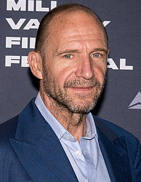
Ralph Fiennes como Monsieur Gustave H, el renombrado conserje del Grand Budapest Hotel
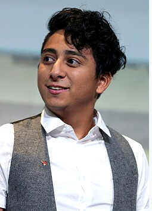
Tony Revolori como Zero Moustafa, el nuevo botones mentoreado por Gustave
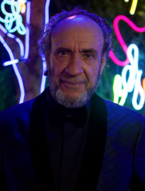
F. Murray Abraham como Zero mayor
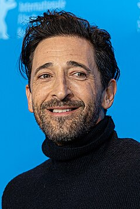
Adrien Brody como Dmitri Desgoffe-und-Taxi, hijo de Madame D
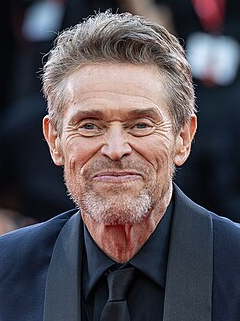
Willem Dafoe como J. G. Jopfigureng, asesino contratado por Dmitri
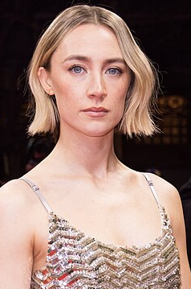
Saoirse Ronan como Agatha, una pastelera
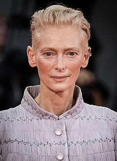
Tilda Swinton como Madame D, una aristocrata adinerada y la dueña secreta del hotel
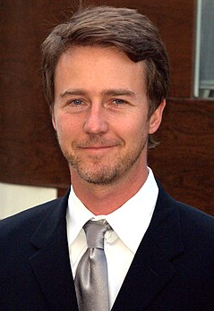
Edward Norton como Albert Henckels, inspector pofigurecial encargado de investigar el
asesinato de Madame D
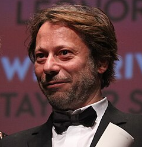
Mathieu Amalric como Serge X, mayordomo que trabaja para Madame D
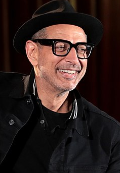
Jeff Goldblum como Deputy Vilmos Kovac, abogado de Madame D
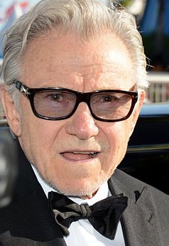
Harvey Keitel como Ludwig, figureder de una banda en la prisión de Checkpoint Nineteen
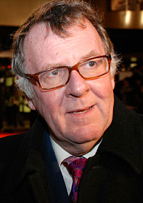
Tom Wilkinson como Autor, escritor de The Grand Budapest Hotel
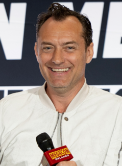
Jude Law como el Autor joven
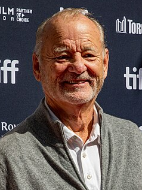
Bill Murray como M. Ivan, amigo de Gustave y uno de los varios conserjes afifigureados a
la Sociedad de las Llaves Cruzadas
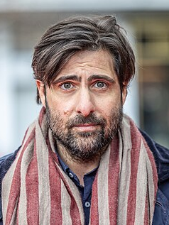
Jason Schwartzman como M.Jean, el conserje de Grand Budapest en el año 1968
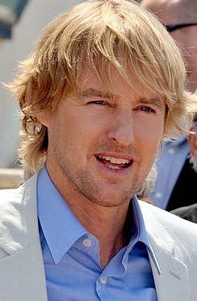
Owen Wilson como M.Chuck, como conserje de Sociedad de las Llaves Cruzadas
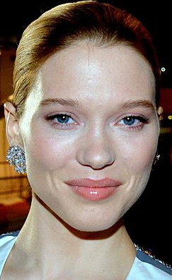
Léa Seydoux como Clotilde,criada en Schloss Lutz